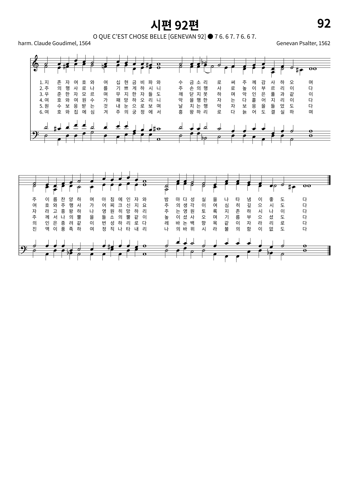

시편 92편
O QUE C’EST CHOSE BELLE [GENEVAN 92] · 7 6. 6 7. 7 6. 6 7.
곡조: Genevan Psalter, 1562 · 화성: Claude Goudimel, 1564 · 가사: 개역한글판 시편 92편 편역(AI 초벌 편역판 · 신학 감수 전) · 6절
악보 PDF MusicXML(출력용) MusicXML(반주용, 전주·반복 포함) 개역한글 시편 92편 읽기

가사
1절 (시편 1-3)
지존자 여호와여
십현금 비파와
수금 소리로써
주께 감사하오며
주 이름 찬양하며
아침에 인자와
밤마다 성실을
나타냄이 좋도다
지존자 여호와여
십현금 비파와
수금 소리로써
주께 감사하오며
주 이름 찬양하며
아침에 인자와
밤마다 성실을
나타냄이 좋도다
2절 (시편 4-5)
주의 행사로 나를
기쁘게 하시니
주 손의 행사로
높이 부르리이다
여호와 주 행사가
어찌 크신지요
주의 생각이여
심히 깊으시도다
주의 행사로 나를
기쁘게 하시니
주 손의 행사로
높이 부르리이다
여호와 주 행사가
어찌 크신지요
주의 생각이여
심히 깊으시도다
3절 (시편 6-8)
우준한 자 모르며
무지한 자들도
깨닫지 못하며
악인은 풀과 같이
자라고 흥왕하나
영원히 망하리
주는 영원토록
지존하시나이다
우준한 자 모르며
무지한 자들도
깨닫지 못하며
악인은 풀과 같이
자라고 흥왕하나
영원히 망하리
주는 영원토록
지존하시나이다
4절 (시편 9-10)
여호와여 원수가
패망하오리니
악을 행한 자는
다 흩어지리이다
주께서 나의 뿔을
들소의 뿔 같이
높이셨사오며
기름 부으셨도다
여호와여 원수가
패망하오리니
악을 행한 자는
다 흩어지리이다
주께서 나의 뿔을
들소의 뿔 같이
높이셨사오며
기름 부으셨도다
5절 (시편 11-12)
원수 보응 받는 것
내 눈으로 보며
날 치는 행악자
보응을 들었도다
의인은 종려 같이
번성하리로다
레바논 백향목
같이 자라리로다
원수 보응 받는 것
내 눈으로 보며
날 치는 행악자
보응을 들었도다
의인은 종려 같이
번성하리로다
레바논 백향목
같이 자라리로다
6절 (시편 13-15)
여호와 집에 심겨
주의 궁정에서
흥왕하리로다
늙어도 결실하며
진액이 풍족하여
정직 나타내리
나의 바위시라
불의함이 없도다
여호와 집에 심겨
주의 궁정에서
흥왕하리로다
늙어도 결실하며
진액이 풍족하여
정직 나타내리
나의 바위시라
불의함이 없도다